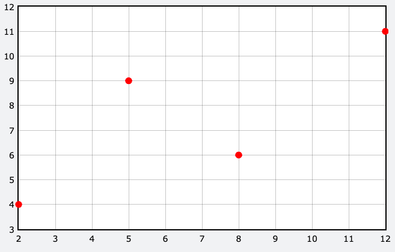
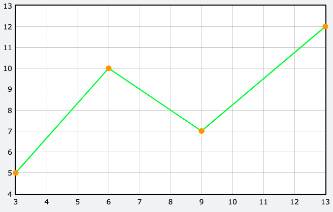

VPython的第三堂課:繪製數據圖表
3/7 2022
類別：程式教學
一、繪製數據圖表
1.散布圖 gdots(): 可於座標上放置數據點
(1)一個數據點:
f1 = gdots(color=color.red,data=(2,4),radius=5)
(2)多個數據點:
f1 = gdots(color=color.red,data=[(2,4),(5,9),(8,6)],radius=5)
(3)再新增數據點plot():
f1 = gdots(color=color.red,data=[(2,4),(5,9),(8,6)],radius=5)
f1.plot(12,11)

2.折線圖gcurve():將數據點彼此以直線連接起來的統計圖表，若橫軸為時間，可觀察一段時間內的變化及趨勢
(1)繪製一折線圖:
f2 =gcurve(color=color.green,data=[(3,5),(6,10),(9,7)])
(2)顯示資料點:
f2 =gcurve(color=color.green,data=[(3,5),(6,10),(9,7)],markers=True, marker_color=color.orange,radius=5)
(3)新增數據點plot():
f2 =gcurve(color=color.green,data=[(3,5),(6,10),(9,7)],markers=True, marker_color=color.orange,radius=5)
f2.plot(13,12)

3.長條圖
(1)直條圖gvbars():
f3 =gvbars(color=color.yellow,data=[(2,4),(5,9),(8,6), delta=1)
(2)橫條圖ghbars():
f4 =ghbars(color=color.blue,data=[(2,4),(5,9),(8,6)], delta=1)
二、繪製物體運動的函數圖
1.x-t圖
GlowScript 3.2 VPython
#關於球
size=0.5
ball=sphere(pos=vector(0,0,0),radius=size ,color=color.magenta ,v=vector(1,0,0))
#關於座標軸
pointer_a=arrow(pos=vector(0,0,0), axis=vector(20,0,0), color=color.blue ,shaftwidth=0.1)
#關於時間
t=0
dt=0.01
#增加函數圖
xt =gcurve(color=color.green)
#關於運動情形
while (t<=10):
rate(100)
ball.pos=ball.pos+ball.v*dt
t=t+dt
print(t,ball.pos)
xt.plot(t,ball.pos.x)
為了清楚這張圖要表示的意義，需要增加圖表名稱，以及橫軸、縱軸座標的物理量。
因此需使用graph()來達到此目的，做法如下:
於xt =gcurve(color=color.green)的上方新增:
timeGraphs=graph(title='Time graphs', xtitle='time(s)', ytitle='value')
說明:graph()中，title='圖表名稱'。xtitle='橫軸名稱' 。ytitle='縱軸名稱'
另外，有時候函數圖中會有多個曲線資料，可為曲線標記名稱方便理解。
做法如下:
將原本xt =gcurve(color=color.green,)內加入label=' '
改寫成xt =gcurve(color=color.green,label='x-t graph')
點擊觀看完整程式碼